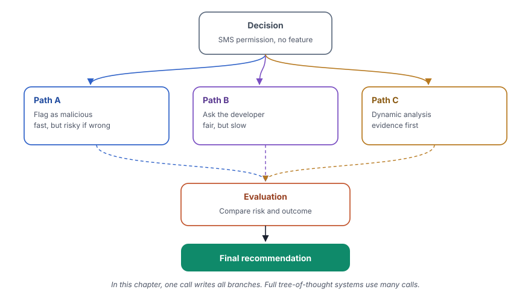

A tree-of-thought prompt makes the model explore several paths, compare them and only then recommend one.
What you will learn
- Why one line of reasoning is weak for a decision with several options
- How a prompt with a fixed answer layout makes the model write three paths and an evaluation
- Why this chapter uses a higher temperature
- How the simple version in this chapter differs from a full tree-of-thought system
Read chapter 8 first. Tree of thought extends chain of thought from one path to several paths.
The idea
A chain of thought follows one path from the problem to the answer. This works well when there is one correct way, as in a calculation. A decision is different. There are several options with advantages and risks. The first idea is not always the best one.
A tree of thought lets the reasoning branch. The model writes several strategies, the branches of the tree. It follows each branch to a likely outcome. Then it compares the branches and selects the best one.
The full method from research uses many calls. One call creates the branches, other calls score them and a search keeps the best branches and drops the weak ones. This chapter uses a simple version that fits in one prompt. The prompt asks for three paths, an evaluation and a recommendation in one answer.
Before a long drive, you look at three routes on a map. One route is the fastest but has a toll. One is free but goes through the city center. One is longer but has no traffic at this hour. You think through each route, compare them and then select one. You do not drive the first road that you see.
The idea in one picture
The decision branches into three paths. Each path has its own reasoning and outcome. An evaluation compares them, and a final recommendation follows.

What we build in this chapter
Both programs ask for decisions in security work, with three options in each question. The first one uses decisions from Android app review and privacy audits. The second one uses decisions from incident response.
App review decisions with Gemini
- Aim
- Get a reasoned recommendation for an app review team.
- Problem
- A suspicious SMS permission, a privacy violation and a weak classifier result.
- Input
- Three decisions with three options each.
- Expected output
- Three paths, an evaluation and a recommendation, for example
The best course of action is Path C. - Model
- Gemini 3.1 Flash Lite
Incident decisions with Qwen
- Aim
- Get a reasoned recommendation for an incident response team.
- Problem
- Ransomware in a hospital, an alert backlog and a zero-day without a patch.
- Input
- Three decisions with three options each.
- Expected output
- Three paths, an evaluation and a recommendation, for example
PATH A (Restore from Backups) is the best course of action. - Model
- Qwen 2.5 7B, through OpenRouter
![Data, for problem in problems, 3 app review decisions, one at a time. Template, tot_prompt = ChatPromptTemplate.from_template(...), Role, an Android application security analyst, {problem}, Layout PATH A, PATH B, PATH C, EVALUATION, FINAL RECOMMENDATION. Model, llm = ChatGoogleGenerativeAI(model="gemini-3.1-flash-lite", temperature=0.7), One long answer for each problem. Parser, StrOutputParser(), Keeps the text. Output, print the problem and the solution, Three paths, evaluation, recommendation, for example dynamic analysis first, then the developer. A loop goes back from stage 5 to stage 1, next problem.](../../assets/img/diagrams/ai-09-ex1-flow.svg)
Step 1Create the file
In your project folder, create the file src/08_tree_of_thought_google.py and open it in your editor.
Step 2Import what you need
from dotenv import load_dotenv
from langchain_google_genai import ChatGoogleGenerativeAI
from langchain_core.prompts import ChatPromptTemplate
from langchain_core.output_parsers import StrOutputParserThe same four imports as in chapters 5 and 8.
Step 3Create the model and the parser
def main():
load_dotenv()
# Initialize the model
# A higher temperature encourages the three paths to genuinely differ
# instead of converging on the same reasoning.
llm = ChatGoogleGenerativeAI(
model="gemini-3.1-flash-lite",
temperature=0.7,
)
# Parser to extract the text from the model response
parser = StrOutputParser()temperature=0.7is new for a reasoning chapter. The comment explains why. At temperature 0, the three paths tend to become variations of the same idea. A medium temperature helps the model write paths that really differ.- Chapter 3 showed that 0.7 still gives sensible text with this model.
Step 4Write the tree-of-thought prompt
# Create the Tree-of-Thought prompt
tot_prompt = ChatPromptTemplate.from_template("""
You are an Android application security analyst.
Analyse the following security decision by exploring MULTIPLE
different response strategies, then compare them.
Decision:
{problem}
Instructions:
1. Generate 3 DIFFERENT response strategies.
2. Label them as Path A, Path B, and Path C.
3. For each path, show the reasoning and likely outcome.
4. Evaluate which path carries the least risk and why.
5. Recommend a final course of action based on the best path.
Solution:
PATH A:
[First strategy]
PATH B:
[Second strategy]
PATH C:
[Third strategy]
EVALUATION:
[Compare the three paths]
FINAL RECOMMENDATION:
[Best course of action]
""")- "exploring MULTIPLE different response strategies, then compare them" states the method. The capital letters stress the important word.
- The five instructions ask for three different strategies, labels, the reasoning and outcome of each path, an evaluation of the risk and a recommendation.
- The answer layout. The part after "Solution" shows the exact headings, PATH A, PATH B, PATH C, EVALUATION and FINAL RECOMMENDATION. The text in square brackets tells the model what goes under each heading. A fixed layout makes the answers of all problems easy to compare.
Step 5Join the parts into a chain
# Create the chain
chain = tot_prompt | llm | parserStep 6Add the decisions
# Sample security decisions
problems = [
"""
A static analysis scan flags an Android app for requesting the
SMS read permission with no visible feature that needs it. Should
the review flag it as malicious, request developer justification,
or run further dynamic analysis first?
""",
"""
A privacy audit finds that an Android app collects users' Aadhaar
numbers and precise location during onboarding, but the privacy
notice never mentions this collection and no separate consent is
taken, as required under India's DPDP Act, 2023. Should the audit
team demand immediate removal of the data field, require the
developer to redesign the consent flow before re-review, or
escalate the finding to the app store's compliance team?
""",
"""
A permissions/intents classifier flags a batch of 5,000 apps as
suspicious with only 60% confidence. Should the team auto-quarantine
all of them, manually review each one, or raise the confidence
threshold and re-run the batch?
""",
]- Each decision names its three options in the question. The model must reason about these options, and it cannot invent easier ones.
- The second decision refers to the Digital Personal Data Protection Act (DPDP Act) of India and the Aadhaar number, the national identity number of India.
- The third decision is about a classifier with a confidence of only 60%. Such a case is common when a team uses machine learning for security.
Step 7Run the chain for each decision
# Invoke the chain for each problem
for problem in problems:
result = chain.invoke({"problem": problem})
print(f"\nProblem:\n{problem.strip()}")
print(f"\nSolution:\n{result.strip()}")
print("=" * 60)Step 8Make the file start main() and run it
if __name__ == "__main__":
main()uv run python src/08_tree_of_thought_google.pyShow the full output151 lines
Problem:
A static analysis scan flags an Android app for requesting the
SMS read permission with no visible feature that needs it. Should
the review flag it as malicious, request developer justification,
or run further dynamic analysis first?
Solution:
### Analysis of Android SMS Permission Flag
As an Android security analyst, the detection of a sensitive permission like `READ_SMS` without a clear functional justification represents a potential violation of the Google Play Developer Policy regarding "User Data" and "Permissions."
---
### PATH A: Immediate Rejection (Flag as Malicious)
**Reasoning:** The `READ_SMS` permission is categorized as "Dangerous" by Android. If an app requests it without a clear, user-facing feature (like a messaging app or a banking app using OTP autofill), it is often indicative of credential harvesting or spyware. By rejecting immediately, the analyst enforces a "zero-trust" stance, preventing potentially harmful code from reaching users.
**Likely Outcome:** High developer frustration. If the developer has a legitimate, non-obvious use case (e.g., a security-focused app or a legacy feature), the app is blocked unnecessarily, leading to a lengthy appeal process.
### PATH B: Request Developer Justification (Interactive Review)
**Reasoning:** This path assumes the developer may have implemented a feature that the static analysis engine failed to identify. The analyst sends a formal inquiry requiring the developer to provide a "Permission Declaration Form" or a video walkthrough demonstrating why the permission is essential for core functionality.
**Likely Outcome:** The developer either provides a valid explanation (which can then be verified) or fails to respond/provides a vague explanation. This maintains a professional relationship while still upholding security standards.
### PATH C: Dynamic Analysis (Behavioral Sandbox)
**Reasoning:** Static analysis often misses obfuscated code or reflective permission requests. By running the APK in a sandboxed environment (Dynamic Analysis), the analyst can monitor API calls, network traffic, and file system access in real-time. If the app attempts to exfiltrate SMS data to a suspicious C2 (Command & Control) server, the malicious intent is confirmed objectively.
**Likely Outcome:** High confidence in the decision. If the app is benign, the analyst sees the permission is never actually utilized. If it is malicious, the analyst gains actionable evidence (IP addresses, exfiltrated data patterns) to justify a permanent ban.
---
### EVALUATION
| Criteria | Path A | Path B | Path C |
| :--- | :--- | :--- | :--- |
| **False Positive Risk** | High | Medium | Low |
| **Security Rigor** | High | Low | High |
| **Operational Effort** | Low | Medium | High |
* **Path A** is too blunt; it risks punishing developers for poor documentation rather than actual malice.
* **Path B** relies on the honesty of the developer, which is ineffective against bad actors.
* **Path C** provides the most accurate assessment by validating *behavior* rather than just *intent*.
**Path C carries the least risk.** It minimizes false positives (by verifying if the permission is actually used) while providing concrete evidence of malicious activity, which is superior to mere suspicion.
---
### FINAL RECOMMENDATION
**The recommended course of action is a hybrid of Path B and Path C:**
1. **Perform Dynamic Analysis (Path C) immediately.** Do not wait for the developer's response. Check if the app calls the `Telephony` APIs to read SMS messages during runtime.
2. **If the dynamic analysis shows no usage of the SMS permission:** Flag the app for a "Policy Violation" regarding "Excessive Permission Requests" (Path B) and require the developer to remove the permission before approval.
3. **If the dynamic analysis shows suspicious data exfiltration:** Immediately reject the app as "Malicious/Malware" and escalate to the security operations team for a potential developer account ban.
This approach ensures that the app is objectively tested for safety while maintaining a structured, evidence-based communication channel with the developer.
============================================================
Problem:
A privacy audit finds that an Android app collects users' Aadhaar
numbers and precise location during onboarding, but the privacy
notice never mentions this collection and no separate consent is
taken, as required under India's DPDP Act, 2023. Should the audit
team demand immediate removal of the data field, require the
developer to redesign the consent flow before re-review, or
escalate the finding to the app store's compliance team?
Solution:
### PATH A: Immediate Remediation (The "Hard Stop")
**Strategy:** Demand immediate removal of the data collection fields from the production build and mandate a full wipe of all previously collected Aadhaar and location data from the backend servers.
* **Reasoning:** This approach prioritizes data minimization and immediate risk mitigation. Under the DPDP Act, collecting sensitive personal data (Aadhaar) without explicit notice and consent is a violation. By forcing removal, the organization eliminates the "ongoing harm" of unauthorized data processing.
* **Likely Outcome:** The developer stops the violation instantly. However, this may break core app functionality if the app relies on these data points for its business model, leading to significant friction and potential loss of revenue for the developer.
### PATH B: Remediation and Compliance Redesign (The "Corrective Path")
**Strategy:** Order the developer to disable the data collection fields in the current build, then require them to submit a comprehensive redesign of the consent flow (including granular, affirmative opt-ins and updated privacy notices) for a mandatory security re-review before the feature can be re-enabled.
* **Reasoning:** This approach balances regulatory compliance with business continuity. It acknowledges that the app may need this data for legitimate purposes, but insists that the "process" must be legal. It treats the developer as a partner in compliance rather than a target for disciplinary action.
* **Likely Outcome:** The developer retains the ability to eventually implement the feature legally. It ensures that when the data collection resumes, it is done under the strict requirements of the DPDP Act, reducing future liability.
### PATH C: Escalation to App Store Compliance (The "Regulatory/External Path")
**Strategy:** Flag the app immediately to the App Store’s (e.g., Google Play) policy enforcement team for a violation of "User Data Policies" and "Legal Compliance," while simultaneously notifying the developer that the app is under suspension review.
* **Reasoning:** This strategy assumes the violation is either malicious or indicative of systemic negligence. By involving the platform holder, the auditor shifts the burden of enforcement to the platform, which has the power to delist or ban the app entirely.
* **Likely Outcome:** This carries the highest severity. The app faces potential removal from the store, which is catastrophic for the business. This is the most effective path if the audit reveals willful non-compliance or if the developer refuses to cooperate with Path A or B.
---
### EVALUATION
* **Path A** is aggressive but lacks a long-term solution for the developer’s feature requirements.
* **Path B** is the most balanced; it addresses the violation while providing a clear roadmap for the developer to achieve compliance. It minimizes the risk of legal liability for both the auditor and the developer.
* **Path C** is high-risk for the developer and should be reserved for cases of bad faith. If used prematurely, it damages the relationship between the audit team and the development team and invites unnecessary scrutiny from the platform holder.
**Least Risk:** **Path B** carries the least risk. It provides a structured, documented path to compliance that satisfies the DPDP Act’s requirements for "notice and consent" while preventing the "nuclear option" of platform delisting.
---
### FINAL RECOMMENDATION
**Adopt Path B.**
The audit team should issue a formal notice of non-compliance to the developer, requiring them to:
1. **Cease and Desist:** Disable the data collection fields in the current version via a hotfix.
2. **Purge/Anonymize:** Securely delete the existing, illegally collected data in accordance with DPDP requirements.
3. **Redesign:** Submit a new onboarding flow that includes a "Notice" (detailing the purpose and necessity of Aadhaar/location data) and a "Consent" mechanism (separate, affirmative action).
4. **Re-audit:** Provide the updated flow for a secondary security review.
Only if the developer fails to comply with this timeline or attempts to circumvent the requirements should the team escalate to **Path C**.
============================================================
Problem:
A permissions/intents classifier flags a batch of 5,000 apps as
suspicious with only 60% confidence. Should the team auto-quarantine
all of them, manually review each one, or raise the confidence
threshold and re-run the batch?
Solution:
### PATH A: Aggressive Automated Quarantine
**Reasoning:** This approach prioritizes security over availability. By auto-quarantining all 5,000 apps, the team eliminates the immediate threat of potential malware execution across the ecosystem. It assumes that a 60% confidence rating is sufficient to justify a "better safe than sorry" posture.
**Likely Outcome:** A massive surge in false positives. The team will face significant backlash from developers and users due to legitimate apps being blocked. This will create a bottleneck of support tickets and urgent manual review requests, potentially overwhelming the security team.
### PATH B: Manual Triage and Review
**Reasoning:** This approach treats the 60% confidence as an "investigative lead" rather than a definitive verdict. The team utilizes a tiered manual review process, starting with high-risk permission combinations or apps with high download counts, while allowing the rest to remain active but monitored.
**Likely Outcome:** High accuracy and minimal disruption to the ecosystem. However, this is extremely resource-intensive. If the team does not have a large dedicated workforce, the review process could take weeks, leaving potentially malicious apps active for too long.
### PATH C: Threshold Tuning and Iterative Re-analysis
**Reasoning:** This approach recognizes that the current classifier settings are too "noisy." By raising the confidence threshold (e.g., to 85% or 90%), the team filters out the low-confidence noise and isolates the most likely malicious candidates. The remaining batch is then re-processed, and the team adjusts the feature set based on the results.
**Likely Outcome:** A significantly smaller, more manageable subset of "high-confidence" suspicious apps. This allows the team to focus their manual efforts where they matter most, while reducing the false-positive rate for the bulk of the 5,000 apps.
---
### EVALUATION
| Criteria | Path A (Auto-Quarantine) | Path B (Manual Review) | Path C (Threshold Tuning) |
| :--- | :--- | :--- | :--- |
| **Risk of Malicious App Escape** | Very Low | Moderate | Low |
| **Risk of False Positives** | Extremely High | Low | Moderate |
| **Operational Efficiency** | High (Immediate) | Very Low | Moderate |
| **Developer/User Impact** | Severe | Low | Low-Moderate |
* **Path A** is operationally reckless and creates significant reputational damage.
* **Path B** is operationally impossible for a batch of 5,000 without extreme scaling.
* **Path C** provides a balanced, analytical approach that optimizes limited human resources while maintaining a defensible security posture.
---
### FINAL RECOMMENDATION
**The best course of action is Path C.**
The 60% confidence level is statistically insufficient to justify mass-quarantine. The team should:
1. **Raise the threshold:** Immediately re-run the classification with a higher threshold (e.g., 85%) to identify the "high-confidence" subset.
2. **Prioritize:** Manually review only the high-confidence subset.
3. **Monitor:** For the remaining apps (those between 60-85% confidence), implement "Runtime Observability" or "Enhanced Monitoring" (e.g., sandboxing or increased logging) rather than outright blocking.
4. **Feedback Loop:** Use the findings from the manual reviews to retrain the classifier, reducing the number of future false positives.
============================================================With temperature 0.7, the paths and the recommendations can change from run to run. That is the purpose of the setting.
In the first decision, the evaluation says that Path C has the least risk. The recommendation then joins Path B and Path C, dynamic analysis first and a request to the developer after it. The model did not only select a branch. It combined the strengths of two branches.
In the second decision, the model calls the Aadhaar number "sensitive personal data" under the DPDP Act. That category comes from older rules under the IT Act. The DPDP Act itself does not define a separate class of sensitive data. A legal or regulatory claim in a model answer always needs a check against the source.
InsideWhat happens inside the calls
All three paths, the evaluation and the recommendation come from one call.
![A sequence diagram with the lanes Your code, tot_prompt, llm, Gemini API, parser. Step 1, Your code to tot_prompt, chain.invoke({"problem" problem}), the chain starts with the template. Step 2, tot_prompt to tot_prompt, Fill {problem}, layout PATH A, PATH B, PATH C, EVALUATION, FINAL RECOMMENDATION. Step 3, tot_prompt to llm, Prompt value, the filled messages go to the model. Step 4, llm to Gemini API, HTTPS request with the API key, temperature 0.7. Step 5, Gemini API to llm, Paths and recommendation, for example dynamic analysis first, then the developer. Step 6, llm to parser, AIMessage, the chain passes the reply to the parser. Step 7, parser to parser, Keep the text, StrOutputParser returns a string. Step 8, parser to Your code, The result, the code prints the problem and the solution. Steps 1 to 8 repeat, Repeated for each of the 3 problems.](../../assets/img/diagrams/ai-09-ex1-seq.svg)
Full code of Example 1src/08_tree_of_thought_google.pyGitHub
"""
Title: Tree of Thought Prompting (Google Generative AI)
uv run python src/08_tree_of_thought_google.py
"""
from dotenv import load_dotenv
from langchain_google_genai import ChatGoogleGenerativeAI
from langchain_core.prompts import ChatPromptTemplate
from langchain_core.output_parsers import StrOutputParser
def main():
load_dotenv()
# Initialize the model
# A higher temperature encourages the three paths to genuinely differ
# instead of converging on the same reasoning.
llm = ChatGoogleGenerativeAI(
model="gemini-3.1-flash-lite",
temperature=0.7,
)
# Parser to extract the text from the model response
parser = StrOutputParser()
# Create the Tree-of-Thought prompt
tot_prompt = ChatPromptTemplate.from_template("""
You are an Android application security analyst.
Analyse the following security decision by exploring MULTIPLE
different response strategies, then compare them.
Decision:
{problem}
Instructions:
1. Generate 3 DIFFERENT response strategies.
2. Label them as Path A, Path B, and Path C.
3. For each path, show the reasoning and likely outcome.
4. Evaluate which path carries the least risk and why.
5. Recommend a final course of action based on the best path.
Solution:
PATH A:
[First strategy]
PATH B:
[Second strategy]
PATH C:
[Third strategy]
EVALUATION:
[Compare the three paths]
FINAL RECOMMENDATION:
[Best course of action]
""")
# Create the chain
chain = tot_prompt | llm | parser
# Sample security decisions
problems = [
"""
A static analysis scan flags an Android app for requesting the
SMS read permission with no visible feature that needs it. Should
the review flag it as malicious, request developer justification,
or run further dynamic analysis first?
""",
"""
A privacy audit finds that an Android app collects users' Aadhaar
numbers and precise location during onboarding, but the privacy
notice never mentions this collection and no separate consent is
taken, as required under India's DPDP Act, 2023. Should the audit
team demand immediate removal of the data field, require the
developer to redesign the consent flow before re-review, or
escalate the finding to the app store's compliance team?
""",
"""
A permissions/intents classifier flags a batch of 5,000 apps as
suspicious with only 60% confidence. Should the team auto-quarantine
all of them, manually review each one, or raise the confidence
threshold and re-run the batch?
""",
]
# Invoke the chain for each problem
for problem in problems:
result = chain.invoke({"problem": problem})
print(f"\nProblem:\n{problem.strip()}")
print(f"\nSolution:\n{result.strip()}")
print("=" * 60)
if __name__ == "__main__":
main()![Data, for problem in problems, 3 incident response decisions, one at a time. Template, tot_prompt = ChatPromptTemplate.from_template(...), Role, an experienced incident response strategist, {problem}, The same layout with three paths and an evaluation. Model, llm = ChatOpenRouter(model="qwen/qwen-2.5-7b-instruct", temperature=0.7), One long answer for each problem. Parser, StrOutputParser(), Keeps the text. Output, print the problem and the solution, Three paths, evaluation, recommendation, restore from backups, triage by severity, isolate. A loop goes back from stage 5 to stage 1, next problem.](../../assets/img/diagrams/ai-09-ex2-flow.svg)
A Same mark tells you that a line has the same job as before. A New mark tells you what is different.
Steps 1 to 3File, imports, model and parser
from dotenv import load_dotenv
from langchain_openrouter import ChatOpenRouter
from langchain_core.prompts import ChatPromptTemplate
from langchain_core.output_parsers import StrOutputParser
def main():
load_dotenv()
# Initialize the model
# A higher temperature encourages the three paths to genuinely differ
# instead of converging on the same reasoning.
llm = ChatOpenRouter(
model="qwen/qwen-2.5-7b-instruct",
temperature=0.7,
)
# Parser to extract the text from the model response
parser = StrOutputParser()- New
ChatOpenRouterwith the Qwen model. - Same
temperature=0.7and the parser.
Step 4Write the tree-of-thought prompt
- NewThe role is "an experienced incident response strategist".
- SameThe five instructions and the answer layout. A good layout works for many kinds of decisions.
Steps 5 to 8Chain, decisions and run
# Sample security decisions
problems = [
"""
Ransomware has encrypted a hospital's patient records system.
Backups exist but are 18 hours old. Should the organisation pay
the ransom, restore from backups, or attempt in-house decryption?
""",
"""
A SOC has a backlog of 400 unreviewed alerts after a public
holiday. Should the team triage by severity, by asset criticality,
or strictly in chronological order?
""",
"""
A zero-day exploit is disclosed for software running on 60 percent
of the company's servers. No official patch exists yet. Should the
team isolate the affected servers now, apply an unofficial
community mitigation, or wait for the vendor patch?
""",
]- NewThree incident decisions. They are ransomware in a hospital with backups that are 18 hours old, 400 alerts after a holiday and a zero-day exploit with no patch. A zero-day is a vulnerability that attackers use before a fix exists.
- SameThe chain, the loop and the prints.
uv run python src/08_tree_of_thought_openrouter.pyShow the full output158 lines
Problem:
Ransomware has encrypted a hospital's patient records system.
Backups exist but are 18 hours old. Should the organisation pay
the ransom, restore from backups, or attempt in-house decryption?
Solution:
### PATH A: Restore from Backups
**Reasoning:**
Restoring from backups is a straightforward and potentially quick way to recover the patient records system. Since the backups are only 18 hours old, they likely contain all critical data that has been updated since then. This method minimizes downtime and ensures that the system is restored to a known good state.
**Likely Outcome:**
- **Success:** The system will be restored within a few hours.
- **Failure:** If the ransomware has modified the backup files or if there are issues with the restoration process, the system might not fully recover.
### PATH B: Attempt In-House Decryption
**Reasoning:**
Given that the backups are only 18 hours old, attempting to decrypt the current encrypted files in-house could provide an alternative to paying the ransom. This approach requires specialized knowledge and tools but could potentially save the organization significant money and avoid reputational damage associated with paying ransoms.
**Likely Outcome:**
- **Success:** If the decryption tools and methods are available and effective, the system can be decrypted without paying.
- **Failure:** If the decryption fails, the organization may still need to pay the ransom or use the backups, which might be outdated.
### PATH C: Pay the Ransom
**Reasoning:**
Paying the ransom is a direct and guaranteed way to regain access to the encrypted data. However, this option comes with significant risks, including the possibility of the attackers not delivering the decryption key, additional demands, or future attacks by the same group.
**Likely Outcome:**
- **Success:** The organization regains access to the encrypted data.
- **Failure:** The attackers do not provide the decryption key, leading to further loss of data or financial loss due to the ransom payment.
### EVALUATION:
- **PATH A (Restore from Backups):** This path carries moderate risk as it relies on the integrity of the backup process and the availability of up-to-date data. However, it is a tried-and-true method that minimizes downtime and avoids the ethical and financial implications of paying a ransom.
- **PATH B (Attempt In-House Decryption):** This path carries higher technical risk but offers the potential for long-term savings and avoiding reputational damage. It also allows the organization to retain control over its data and processes.
- **PATH C (Pay the Ransom):** This path carries the highest risk, including the possibility of not receiving the decryption key, potential future attacks, and the ethical implications of supporting criminal activity.
### FINAL RECOMMENDATION:
Based on the analysis, **PATH A (Restore from Backups)** is the best course of action. While it does carry some risk, it is the most balanced approach. Restoring from backups minimizes downtime, ensures data integrity, and avoids the ethical and financial pitfalls associated with paying a ransom. Additionally, the organization should consider enhancing its incident response plan to include regular and robust encryption practices, continuous monitoring, and rapid backup procedures to mitigate similar incidents in the future.
============================================================
Problem:
A SOC has a backlog of 400 unreviewed alerts after a public
holiday. Should the team triage by severity, by asset criticality,
or strictly in chronological order?
Solution:
### Solution:
#### PATH A:
**Strategy: Triage by Severity**
- **Reasoning:** Prioritizing alerts based on severity ensures that the most critical issues are addressed first. Alerts marked as high severity typically indicate a significant risk or potential compromise, such as unauthorized access attempts, malware infections, or data exfiltration.
- **Outcome:** The SOC team will focus on addressing the most pressing threats, potentially mitigating severe security incidents before they escalate. This approach minimizes the risk of critical vulnerabilities being overlooked and ensures that the most impactful alerts are handled promptly.
#### PATH B:
**Strategy: Triage by Asset Criticality**
- **Reasoning:** Triage by asset criticality involves prioritizing alerts based on the importance of the affected assets. Critical assets, such as those handling sensitive data or supporting core business functions, would be given higher priority.
- **Outcome:** This approach ensures that any alert affecting mission-critical systems is reviewed and acted upon quickly. It helps in protecting the organization's most valuable resources and reducing the potential impact of security breaches.
#### PATH C:
**Strategy: Triage in Chronological Order**
- **Reasoning:** Reviewing alerts in chronological order means the team starts with the oldest alerts and works their way through to the newest. This method assumes that newer alerts are more likely to be relevant and actionable.
- **Outcome:** This strategy may not prioritize the most urgent or critical alerts but can help in maintaining a consistent workflow and ensuring that no alerts are missed. However, it risks overlooking time-sensitive issues that could have escalated since the alerts were generated.
### EVALUATION:
1. **PATH A (Triage by Severity):**
- **Risk:** Lower risk of missing critical alerts because severe alerts are prioritized first.
- **Efficiency:** Ensures the most impactful issues are addressed quickly.
- **Flexibility:** Can adapt to changing circumstances if new high-severity alerts come in.
2. **PATH B (Triage by Asset Criticality):**
- **Risk:** Lower risk of overlooking critical assets, ensuring essential systems remain protected.
- **Efficiency:** Streamlines the process by focusing on the most important parts of the infrastructure.
- **Flexibility:** Allows for dynamic prioritization based on the asset's role within the organization.
3. **PATH C (Triage in Chronological Order):**
- **Risk:** Higher risk of missing critical alerts that may have become more urgent since they were initially generated.
- **Efficiency:** Maintains a structured and consistent process.
- **Flexibility:** Less adaptable to immediate changes in threat landscape.
### FINAL RECOMMENDATION:
**Recommended Course of Action: PATH A (Triage by Severity)**
**Reasoning:** While both PATH B and PATH C have merits, triaging by severity offers the most robust protection against critical security incidents. By focusing on the most severe alerts first, the SOC team ensures that the highest-priority threats are addressed promptly, thereby minimizing the risk of significant damage. This approach aligns with best practices in incident response and provides the necessary flexibility to adapt to evolving threats.
============================================================
Problem:
A zero-day exploit is disclosed for software running on 60 percent
of the company's servers. No official patch exists yet. Should the
team isolate the affected servers now, apply an unofficial
community mitigation, or wait for the vendor patch?
Solution:
### Solution:
#### PATH A:
**Strategy:** Isolate the affected servers now.
**Reasoning:**
Isolating the affected servers immediately is a proactive approach to mitigate potential damage. This strategy minimizes the risk of the exploit being exploited by malicious actors, as it prevents the affected systems from communicating with other parts of the network. Additionally, isolating the servers can help contain any lateral movement if an attacker gains access to one of the isolated systems.
**Likely Outcome:**
- **Immediate Mitigation:** The risk of the exploit being used to spread further within the network is significantly reduced.
- **Operational Impact:** There may be a temporary disruption in services running on the isolated servers, which could affect business operations.
- **Resource Utilization:** Additional resources will be needed to manage and monitor the isolated servers.
- **Risk:** If the exploit is highly sophisticated, it might still find a way to bypass isolation measures, leading to potential compromise.
#### PATH B:
**Strategy:** Apply an unofficial community mitigation.
**Reasoning:**
Using an unofficial community mitigation can provide a quick fix while waiting for an official patch from the vendor. Community-developed patches often emerge faster than official ones and can address the immediate security concern. However, these patches are not officially vetted and may have unforeseen issues or vulnerabilities.
**Likely Outcome:**
- **Quick Fix:** The system is protected against the exploit more quickly than waiting for an official patch.
- **Uncertainty:** There is a risk that the community mitigation may introduce new vulnerabilities or bugs, potentially leading to system instability.
- **Security Risk:** The unofficial nature of the patch means it has not been thoroughly tested, which could lead to security issues if it is not fully compatible with the existing software.
- **Risk:** The community mitigation might not fully address the exploit, leaving the system vulnerable.
#### PATH C:
**Strategy:** Wait for the vendor patch.
**Reasoning:**
Waiting for the vendor patch is a conservative approach. Official patches are typically well-tested and ensure compatibility with the software version. Waiting also allows the vendor to address any potential issues and provide a comprehensive solution.
**Likely Outcome:**
- **Comprehensive Solution:** Once the official patch is released, it will likely address the exploit comprehensively and include all necessary fixes.
- **Delayed Response:** The system remains vulnerable until the patch is available, which could be several days or even weeks.
- **Risk:** During this period, the system is exposed to the exploit, and there is no guarantee that other exploits or vulnerabilities may not be discovered.
- **Resource Utilization:** No additional resources are required beyond monitoring the situation.
### EVALUATION:
- **PATH A (Isolation):** Provides immediate protection but may cause operational disruptions and requires additional resource management.
- **PATH B (Community Mitigation):** Offers a quick fix but comes with the risk of introducing new vulnerabilities and potential system instability.
- **PATH C (Vendor Patch):** Ensures a comprehensive solution but leaves the system exposed during the wait period.
### FINAL RECOMMENDATION:
**Recommended Course of Action:**
Given the need for immediate protection while ensuring long-term stability, **Path A (Isolation)** appears to be the best course of action. While it introduces some operational disruption, it provides an immediate barrier against the exploit, minimizing the risk of further damage. Once the official patch becomes available, the isolation can be lifted, and the system can be updated without the risk of the exploit being exploited again.
**Action Plan:**
1. Immediately isolate the affected servers.
2. Monitor the network for any signs of compromise.
3. Once the official patch is available, apply it and lift the isolation measures.
4. Conduct a thorough post-patch assessment to ensure full recovery and security.
This approach balances immediate security needs with long-term stability and reduces overall risk.
============================================================The order of the paths and the recommendations can change between runs.
The recommendations are sensible. Restore from backups, triage by severity and isolate the servers. But the reasoning stays general. For the hospital, the model does not ask if the backups are free of the ransomware. It also says little about the patient records of the last 18 hours. An expert asks such questions first.
A tree of thought organizes the reasoning, but it cannot add knowledge that the model does not use.
InsideWhat happens inside the calls
The same chain and layout for incident decisions.
![A sequence diagram with the lanes Your code, tot_prompt, llm, OpenRouter API, parser. Step 1, Your code to tot_prompt, chain.invoke({"problem" problem}), the chain starts with the template. Step 2, tot_prompt to tot_prompt, Fill {problem}, the same layout with three paths and an evaluation. Step 3, tot_prompt to llm, Prompt value, the filled messages go to the model. Step 4, llm to OpenRouter API, HTTPS request with the API key, temperature 0.7. Step 5, OpenRouter API to llm, Paths and recommendation, restore from backups, triage by severity, isolate. Step 6, llm to parser, AIMessage, the chain passes the reply to the parser. Step 7, parser to parser, Keep the text, StrOutputParser returns a string. Step 8, parser to Your code, The result, the code prints the problem and the solution. Steps 1 to 8 repeat, Repeated for each of the 3 problems.](../../assets/img/diagrams/ai-09-ex2-seq.svg)
Full code of Example 2src/08_tree_of_thought_openrouter.pyGitHub
"""
Title: Tree of Thought Prompting (OpenRouter)
uv run python src/08_tree_of_thought_openrouter.py
"""
from dotenv import load_dotenv
from langchain_openrouter import ChatOpenRouter
from langchain_core.prompts import ChatPromptTemplate
from langchain_core.output_parsers import StrOutputParser
def main():
load_dotenv()
# Initialize the model
# A higher temperature encourages the three paths to genuinely differ
# instead of converging on the same reasoning.
llm = ChatOpenRouter(
model="qwen/qwen-2.5-7b-instruct",
temperature=0.7,
)
# Parser to extract the text from the model response
parser = StrOutputParser()
# Create the Tree-of-Thought prompt
tot_prompt = ChatPromptTemplate.from_template("""
You are an experienced incident response strategist.
Analyse the following security decision by exploring MULTIPLE
different response strategies, then compare them.
Decision:
{problem}
Instructions:
1. Generate 3 DIFFERENT response strategies.
2. Label them as Path A, Path B, and Path C.
3. For each path, show the reasoning and likely outcome.
4. Evaluate which path carries the least risk and why.
5. Recommend a final course of action based on the best path.
Solution:
PATH A:
[First strategy]
PATH B:
[Second strategy]
PATH C:
[Third strategy]
EVALUATION:
[Compare the three paths]
FINAL RECOMMENDATION:
[Best course of action]
""")
# Create the chain
chain = tot_prompt | llm | parser
# Sample security decisions
problems = [
"""
Ransomware has encrypted a hospital's patient records system.
Backups exist but are 18 hours old. Should the organisation pay
the ransom, restore from backups, or attempt in-house decryption?
""",
"""
A SOC has a backlog of 400 unreviewed alerts after a public
holiday. Should the team triage by severity, by asset criticality,
or strictly in chronological order?
""",
"""
A zero-day exploit is disclosed for software running on 60 percent
of the company's servers. No official patch exists yet. Should the
team isolate the affected servers now, apply an unofficial
community mitigation, or wait for the vendor patch?
""",
]
# Invoke the chain for each problem
for problem in problems:
result = chain.invoke({"problem": problem})
print(f"\nProblem:\n{problem.strip()}")
print(f"\nSolution:\n{result.strip()}")
print("=" * 60)
if __name__ == "__main__":
main()Two examples, side by side
| Example 1 | Example 2 | |
|---|---|---|
| Domain | App review and privacy audit | Incident response |
| Role | Android application security analyst | Incident response strategist |
| Model | Gemini 3.1 Flash Lite | Qwen 2.5 7B, through OpenRouter |
| Evaluation | Detailed, with a table of criteria | Short notes for each path |
| Same | temperature=0.7, the answer layout, the chain and the loop | |
When it works and when it does not
- It works for decisions with real alternatives, for example a response plan, a design choice or a priority.
- It is not needed for tasks with one correct way, such as a calculation. Use chain of thought there.
- One call has limits. The model writes and judges its own branches in one pass. A full system uses separate calls to score each branch, or a second model as a judge.
- Sub-questions often depend on each other. When a decision has parts that build on other parts, a tree is not the right shape. Chapter 10 shows graph of thought.
To compare this pattern with the other prompting patterns, open the prompting patterns quick reference.
Decisions like these can stop an app, block servers or affect patients. Three rules apply.
- The model advises, a person decides. Use the paths as input for a human decision, never as an automatic action.
- Check the facts behind each path. A path can rest on a wrong legal claim or an invented policy. The DPDP example in this chapter shows such a case.
- Mind what you share. Real incident details are confidential. Use an approved model and remove names, IP addresses and internal details when you can.
Check yourself
What is the main difference between chain of thought and tree of thought?
Chain of thought follows one path to the answer. Tree of thought explores several paths, compares them and then selects one.
Why does this chapter use temperature=0.7 and not 0?
At temperature 0, the three paths tend to become variations of the same idea. A medium temperature helps the model write paths that really differ.
How does a full tree-of-thought system differ from the prompt in this chapter?
A full system uses many calls. It creates branches, scores them in separate calls and searches for the best branch. This chapter writes all branches and the evaluation in one call.
A lost company laptop
An employee reports a lost company laptop. Full-disk encryption is on, and the laptop was locked. Ask a local model with Ollama to explore three paths. The paths are to wipe it remotely now, to revoke the credentials of the employee first or to wait one day. Use the tree-of-thought layout from this chapter.
from langchain_ollama import ChatOllama
llm = ChatOllama(model="llama3.2:3b", temperature=0.7)- Keep the headings PATH A, PATH B, PATH C, EVALUATION and FINAL RECOMMENDATION.
- Run the program two times and compare the recommendations.
Show one solutionsrc/08_tree_of_thought_ollama.py
"""
Title: Tree of Thought Prompting (Ollama)
uv run python src/08_tree_of_thought_ollama.py
"""
from langchain_core.output_parsers import StrOutputParser
from langchain_core.prompts import ChatPromptTemplate
from langchain_ollama import ChatOllama
def main():
llm = ChatOllama(model="llama3.2:3b", temperature=0.7)
parser = StrOutputParser()
tot_prompt = ChatPromptTemplate.from_template("""
You are an IT security manager.
Analyse the following decision by exploring three different
strategies, then compare them.
Decision: {problem}
PATH A:
PATH B:
PATH C:
EVALUATION:
FINAL RECOMMENDATION:
""")
chain = tot_prompt | llm | parser
problem = (
"An employee reports a lost company laptop. Full-disk encryption is on "
"and the laptop was locked. Should IT wipe it remotely now, revoke the "
"employee's credentials first, or wait one day for the laptop to be found?"
)
print(chain.invoke({"problem": problem}))
if __name__ == "__main__":
main()A possible output, shortened. Your paths will be different.
PATH A: Wipe remotely now. The data is safe even if the encryption fails, but
the laptop is lost for good if it is found tomorrow.
PATH B: Revoke credentials first. Stolen sessions and saved passwords become
useless at once, and the laptop can still come back.
PATH C: Wait one day. No cost if the laptop is found, but any active session
stays open for an attacker.
EVALUATION: Path B removes the largest risk quickly and keeps both options open.
FINAL RECOMMENDATION: Revoke the credentials now, and wipe the laptop if it is
not found within 24 hours.Key terms at a glance
| Term | Meaning |
|---|---|
| Tree of thought | A method that explores several paths, compares them and selects the best one. |
| Branch, path | One possible strategy with its reasoning and outcome. |
| Evaluation | The comparison of the paths by risk and outcome. |
| Answer layout | Fixed headings in the prompt that the answer must follow. |
| Zero-day | A vulnerability that attackers use before a fix exists. |
| DPDP Act | Digital Personal Data Protection Act of India, 2023. |
| Chain of thought | A prompt that makes the model write its steps before the answer. |
| Temperature | How much the model varies its answers. |